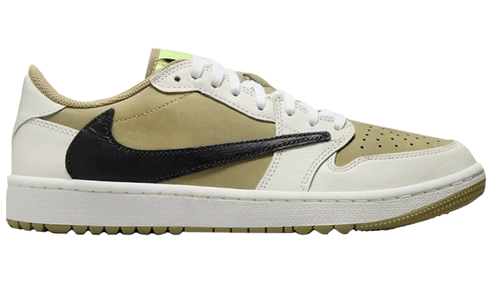

Jordan 1 Retro Low Golf
Chestnut (Women's)
Майкл Джордан, будущий основатель компании Air Jordan, родился в 1963 году в Бруклине, Нью-Йорк. В 1984 году он подписал контракт с командой Национальной баскетбольной ассоциации (НБА) "Чикаго Буллз". С самого начала своей карьеры в НБА Джордан демонстрировал свои выдающиеся способности на площадке.
В 1985 году компания Nike выпустила кроссовки "Air Force 1", которые были первыми баскетбольными кроссовками с воздушной подушкой. Однако, Джордан и его тренер Фил Джексон считали, что эти кроссовки не обеспечивают необходимую поддержку и амортизацию для игры на высоком уровне.
После очередной игры Джордан попросил своего друга и партнера по команде, Трента Диджея, помочь ему найти кроссовки, которые лучше подходили бы для его стиля игры.
В результате они нашли пару кроссовок "Converse All Star", которые Джордан решил использовать в следующих играх.
Однако, вскоре после этого, Фил Джексон увидел, что Джордан играет в кроссовках "Converse", и решил помочь ему найти подходящую обувь для игры. Он связался с Nike и предложил им создать специальную модель для Джордана, которая бы обеспечивала лучшую поддержку и амортизацию.
О кроссах
Дата выхода
15/12/2021
Розничная цена
320€
Материалы
Кожа, текстиль
Тебе понравится:

Adidas Campus 00s
Core Black

UGG Classic Ultra Mini Boot
Chestnut (Women's)